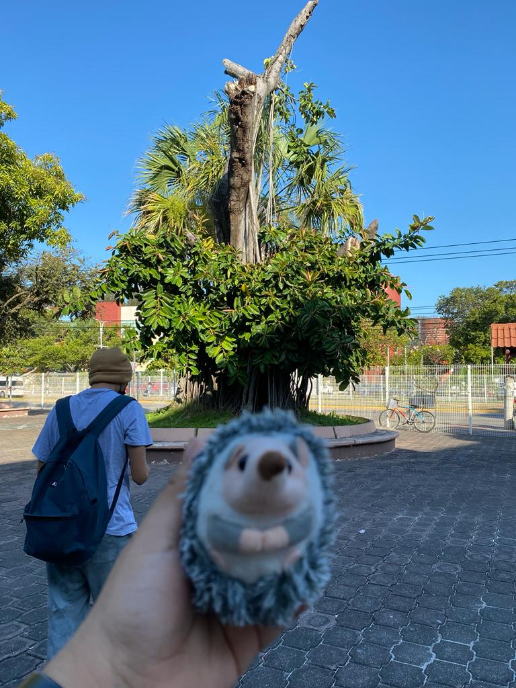
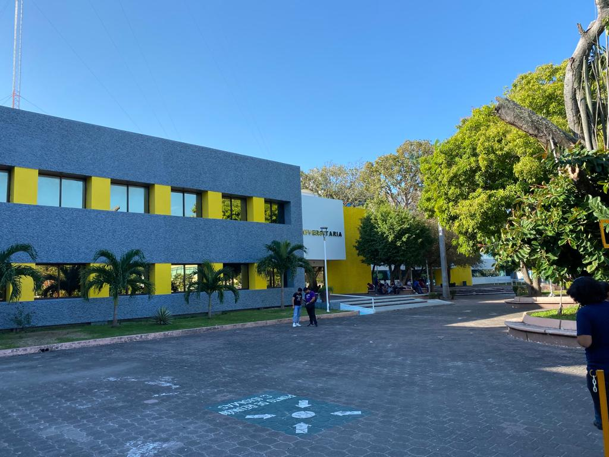

Panoramico



Plano americano y plano medio
Plano medio corto y plano close up
Extremo close up y Plano detalle
Para la realización de estos proyectos fotograficos se hicieron uso de diferentes técnicas para poder tener una mejor vista y apreciación de acuerdo a todas y cada una de ellas y de esa manera mostrar un buen trabajo tomando en cuenta luces, espacio, forma de fotografía, encuadres.